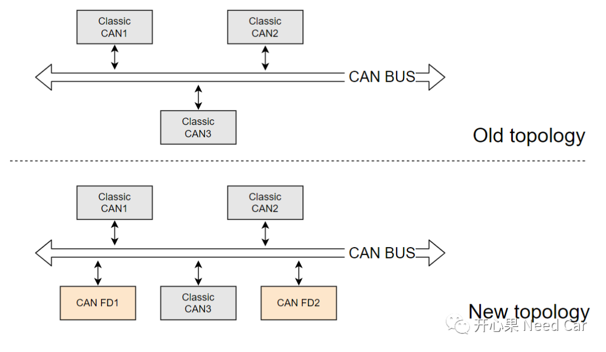
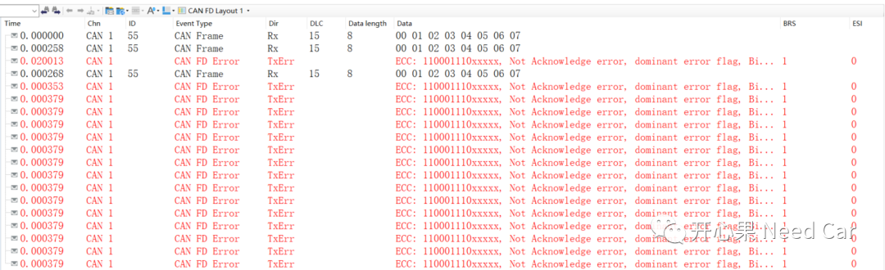
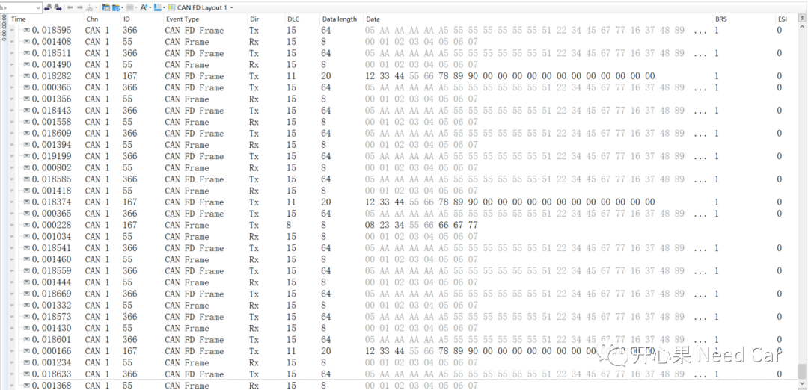
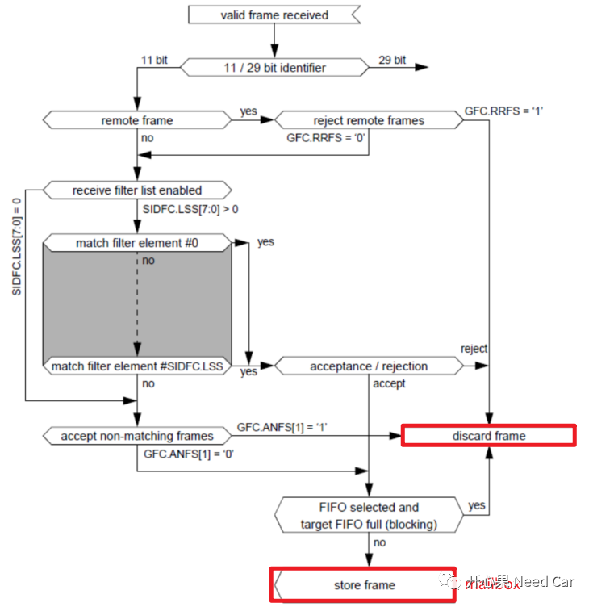
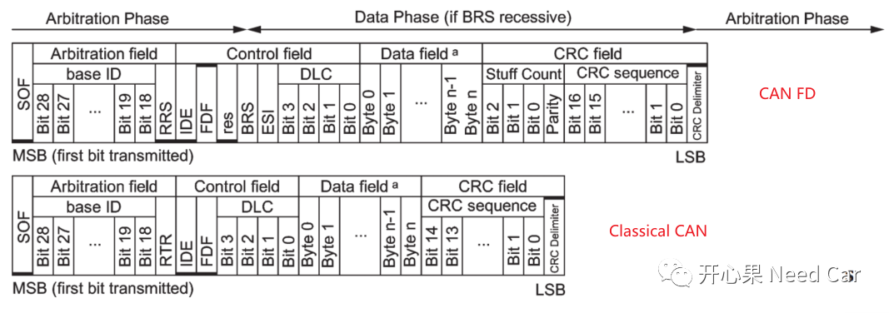
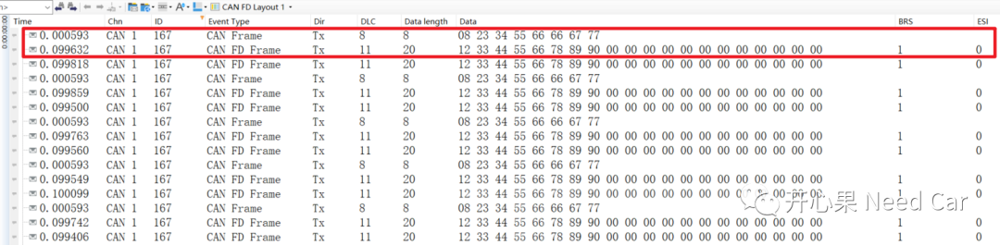
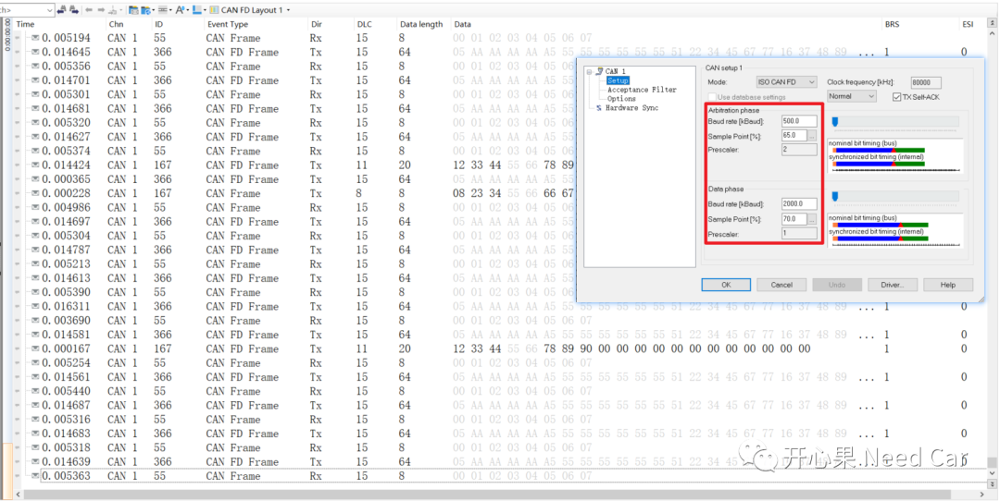
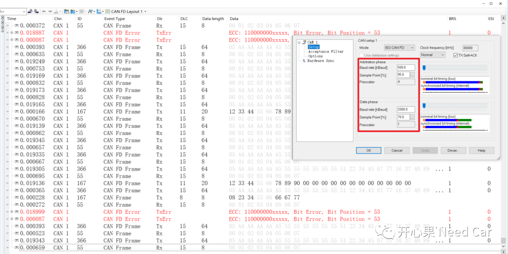

开心果 Need Car · 2023-08-11T08:55:00+08:00 · 微信原文
搞汽车电子，尤其底层软件开发，不能乍见之欢，“熬”的住，方得“自由”。单丝不成线，大家一起搞，可以走的更远。——开心果 Need Car
目前，整车的网络拓扑中，CAN FD的使用已经非常普遍。当然，带来的问题也非常的多。CAN FD在设计之初，就考虑了向后兼容Classic CAN，以便于CAN FD报文和经典CAN报文在同一个局域网内共存。然而，具体到工程的实现，很多细节还需要开发人员把控，确保网络通信的鲁棒性。本文，从经典CAN和CAN FD组网的角度讨论如下几个问题：
1、经典CAN网络加入CAN FD节点，需要注意什么？
2、CAN和CAN FD的ID可以相同吗？
1、经典CAN网络加入CAN FD节点，需要注意什么？

（一）硬件改变
当经典CAN节点升级到CAN FD节点时，需要考虑Transceiver和Controller的选型。
Transceiver选型：
因为CAN FD的数据段支持更高的通信速率（eg：2000Kbps），意味着Transceiver可以进行更快的数(Digital)/模(Analog)信号的转换，所以，如果要支持CAN FD报文，对于CAN FD节点，Transceiver选型中，要选择支持CAN FD的收发器。eg：TLE6250（不支持CAN FD），不能选用，NXP TJA1145（支持CAN FD），可以选用。
Controller选型：
一般，CAN Module（主要指CAN Controller）集成在主芯片中，所以，选择主芯片时，需要选择支持CAN FD通信的芯片。就目前常用的主流芯片（eg：英飞凌、瑞萨、ST等），几乎都支持CAN FD通信。
网络拓扑增加CAN FD节点，不能仅增加一个CAN FD节点，如果仅增加一个CAN FD节点，意味着这个CAN FD节点发送的CAN FD报文，没有对应的接收节点，也就会造成No Ack错误，总线上出现错误帧，如下所示：



2、CAN和CAN FD的ID可以相同吗？

所以，即使ID（IDentifier）相同，CAN和CAN FD报文也不是相同的报文。所以，两者可以在一个网段内共存，且不会影响对应节点的接收，示意如下：

3、采样点对通信速率的影响
CAN通信质量的好/坏，需要合理的采样点保证。不管是CAN或者CAN FD，开发或者测试中，要严格按照需求设置采样点，否则，可能导致节点发送错误帧，影响总线通信。
举例：
在CANoe中设置仲裁段采样点为65%，通信质量如下所示：


往期精彩回顾
基于Hightec+TC375TP的RT-Thread移植详解